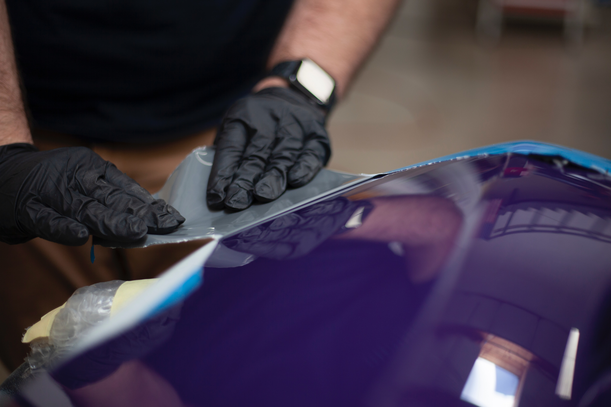

{{card.description}}
Le garage Vincent Parrot a ouvert ses portes en 2021 à Toulouse. Le garage propose une large gamme de services, avec la mécanique générale, l'entretien de véhicule ainsi que la réparation de carrosserie. De plus, le garage Parrot propose à la vente des véhicules d'occasion.
